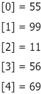

Taller #4 de PSeInt
Aquí te presento el taller #4: Arreglos
1. Crear un vector de tipo Entero con 5 posiciones, llenarlo con información solicitada al usuario.
Después de recoger toda la información, se requiere imprimir el índice de cada posición en el arreglo
con su valor de la siguiente manera:

Proceso primerEjercicio Definir i, cantidad, num Como Entero; Dimension num[5]; Para i <- 0 Hasta 4 Con Paso 1 Hacer Escribir "Digite un número:"; Leer cantidad; num[i] <- cantidad; FinPara Limpiar Pantalla; Para i <- 0 Hasta 4 Con Paso 1 Hacer Escribir "[", i, "] = ", num[i]; FinPara FinProceso
2. Crear un arreglo de números enteros de 20 posiciones, el cual, debe ser llenado con números
aleatorios entre 1 y 100; después de haber llenado dicho arreglo, se debe volver a recorrer utilizando
un ciclo diferente al que se usó para llenarse e imprimir los números pares e impares. Ejemplo:

Proceso segundoEjercicio Definir modulo, i, indice, indice2, aleat, arreglo Como Entero; Dimension arreglo[20]; indice <- 0; indice2 <- 0; Escribir "Números aleatorios: " Sin Saltar; Para i <- 0 Hasta 19 Con Paso 1 Hacer aleat <- azar(100)+1; arreglo[i] <- aleat; Escribir ", ",aleat Sin Saltar; FinPara Escribir ""; Escribir ""; Escribir Sin Saltar "Números pares: "; Mientras indice < 20 Hacer Si (arreglo[indice] mod 2) = 0 Entonces Escribir Sin Saltar ", ", arreglo[indice]; FinSi indice <- indice+1; FinMientras Escribir ""; Escribir Sin Saltar "Números impares: "; Mientras indice2 < 20 Hacer Si (arreglo[indice2] mod 2) = 1 Entonces Escribir Sin Saltar ", ", arreglo[indice2]; FinSi indice2 <- indice2+1; FinMientras Escribir ""; FinProceso
3. Imprimir los números primos del 1 al 1000, el resultado debe ser buscado de forma matemática.
Proceso tercerEjercicio Definir i, j, l, m, n, primos, contador, posicion Como Entero; Definir esPrimo Como Logico; Dimension primos[1000]; contador <- 0; posicion <- 0; Para i <- 1 Hasta 1000 Con Paso 1 Hacer Si i <= 1 o i = 4 Entonces contador <- contador + 1; SiNo Para j <- 2 Hasta i / 2 Con Paso 1 Hacer Si (i mod j) = 0 Entonces j <- i; contador <- contador + 1; FinSi FinPara FinSi FinPara Para l <- 1 Hasta 1000 Con Paso 1 Hacer esPrimo <- Verdadero; Si l <= 1 o l = 4 Entonces esPrimo <- Falso; SiNo Para m <- 2 Hasta l / 2 Con Paso 1 Hacer Si (l mod m) = 0 Entonces esPrimo <- falso; m <- l; FinSi FinPara FinSi Si esPrimo Entonces primos[posicion] <- l; Si posicion < 1000 - contador Entonces posicion <- posicion + 1; FinSi FinSi FinPara Para n <- 1 Hasta 1000 - contador Con Paso 1 Hacer Escribir primos[n-1]; FinPara FinProceso
4. Dada la siguiente matriz bidimensional, el cual debe de quemar en el código:

Utilizando el conocimiento adquirido, a excepción de hacerlo de forma manual, imprima la siguiente
matriz bidimensional.

Proceso cuartoEjercicio Definir fila, columna Como Entero; Definir matriz, matriz2 Como Caracter; Dimension matriz[4,5]; Dimension matriz2[4,5]; matriz[0,0] <- "01"; matriz[0,1] <- "02"; matriz[0,2] <- "03"; matriz[0,3] <- "04"; matriz[0,4] <- "05"; matriz[1,0] <- "06"; matriz[1,1] <- "07"; matriz[1,2] <- "08"; matriz[1,3] <- "09"; matriz[1,4] <- "10"; matriz[2,0] <- "11"; matriz[2,1] <- "12"; matriz[2,2] <- "13"; matriz[2,3] <- "14"; matriz[2,4] <- "15"; matriz[3,0] <- "16"; matriz[3,1] <- "17"; matriz[3,2] <- "18"; matriz[3,3] <- "19"; matriz[3,4] <- "20"; Para fila <- 0 Hasta 3 Con Paso 1 Hacer Para columna <- 0 Hasta 4 Con Paso 1 Hacer Escribir matriz[fila,columna] , " " Sin Saltar; FinPara Escribir " "; FinPara Para fila <- 0 Hasta 3 Con Paso 1 Hacer Si fila = 0 o fila = 2 Entonces Para columna <- 0 Hasta 4 Con Paso 1 Hacer matriz2[fila,columna] <- matriz[fila,columna]; FinPara SiNo Si fila = 1 o fila = 3 Entonces Para columna <- 4 Hasta 0 Con Paso -1 Hacer matriz2[fila,columna] <- matriz[fila,4-columna]; FinPara FinSi FinSi FinPara Escribir ""; Para fila <- 0 Hasta 3 Con Paso 1 Hacer Para columna <- 0 Hasta 4 Con Paso 1 Hacer Escribir matriz2[fila,columna] , " " Sin Saltar; FinPara Escribir " "; FinPara FinProceso
5. Se debe de imprimir el siguiente cuadro:

El usuario deberá insertar la fila y columna de la cual desea ver el resultado, el resultado de cada
celda debe estar previamente calculado en una matriz bidimensional la cual cada resultado obedecerá a la
fila y columna insertada por el usuario.
Proceso quintoEjercicio Definir tabla, fila, columna, numFila, numColumna Como Entero; Dimension tabla[10,10]; Escribir " Tabla de Multiplicar"; Escribir ""; Escribir " COLUMNAS"; Escribir ""; Escribir " 0 1 2 3 4 5 6 7 8 9"; Escribir ""; Escribir " 0 1 x 1 2 x 1 3 x 1 4 x 1 5 x 1 6 x 1 7 x 1 8 x 1 9 x 1 10 x 1"; Escribir ""; Escribir " 1 1 x 2 2 x 2 3 x 2 4 x 2 5 x 2 6 x 2 7 x 2 8 x 2 9 x 2 10 x 2"; Escribir ""; Escribir " 2 1 x 3 2 x 3 3 x 3 4 x 3 5 x 3 6 x 3 7 x 3 8 x 3 9 x 3 10 x 3"; Escribir ""; Escribir " 3 1 x 4 2 x 4 3 x 4 4 x 4 5 x 4 6 x 4 7 x 4 8 x 4 9 x 4 10 x 4"; Escribir " F"; Escribir " I 4 1 x 5 2 x 5 3 x 5 4 x 5 5 x 5 6 x 5 7 x 5 8 x 5 9 x 5 10 x 5"; Escribir " L"; Escribir " A 5 1 x 6 2 x 6 3 x 6 4 x 6 5 x 6 6 x 6 7 x 6 8 x 6 9 x 6 10 x 6"; Escribir " S"; Escribir " 6 1 x 7 2 x 7 3 x 7 4 x 7 5 x 7 6 x 7 7 x 7 8 x 7 9 x 7 10 x 7"; Escribir ""; Escribir " 7 1 x 8 2 x 8 3 x 8 4 x 8 5 x 8 6 x 8 7 x 8 8 x 8 9 x 8 10 x 8"; Escribir ""; Escribir " 8 1 x 9 2 x 9 3 x 9 4 x 9 5 x 9 6 x 9 7 x 9 8 x 9 9 x 9 10 x 9"; Escribir ""; Escribir " 9 1 x 10 2 x 10 3 x 10 4 x 10 5 x 10 6 x 10 7 x 10 8 x 10 9 x 10 10 x 10"; Para numFila <- 1 Hasta 10 Con Paso 1 Hacer Para numColumna <- 1 Hasta 10 Con Paso 1 Hacer tabla[numFila-1,numColumna-1] <- numFila * numColumna; FinPara FinPara Escribir "Digite el número de la fila"; Leer fila; Escribir "Digite el número de la columna"; Leer columna; Escribir "Resultado: ", tabla[fila,columna]; FinProceso
Sobre mi
Administrador de redes de cómputo y sistemas teleinformáticos, mantenimiento de computadores, desarrollador de aplicaciones de escritorio, web y móviles.